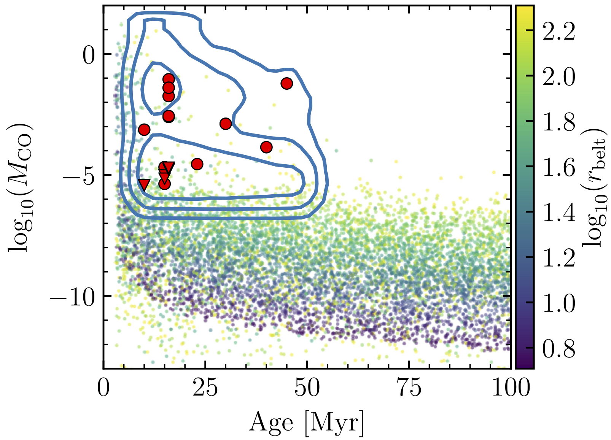
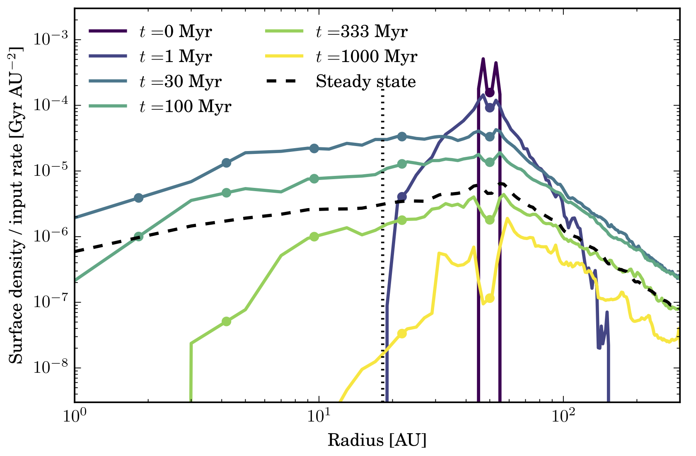

Planetary systems are not only composed of planets but also of tenuous dusty belts called debris discs that are generated by collisions of asteroids and comets, analogous to the asteroid and Kuiper belts in our own Solar System. Just like our Solar System's debris disc, the dust belts around other stars provide a unique insight into the formation, architecture, and evolution of the underlying planetary system, and can even be a key source of volatile delivery to Earth-like planets. Since my PhD, I have been doing research studying ExoKuiper belts, imaging them with ALMA to study their structure (see images above) and constrain their volatile composition, and using numerical simulations to model their interaction with planets. Below you can find a general description of lines of research that I have been pursuing in the last years.
Radial substructure

Over the last years, I have used ALMA to image with high resolution wide exoKuiper belts to search for evidence of annular substructure. In some of these systems, I have found so-called gaps-annular regions that are depleted of dust (see Figure on the right). These gaps are the smoking gun of planets, which through gravitational interactions can clear broad regions of debris, producing these gaps. Such planets could have orbits inside these gaps, or closer to the star and open these gaps through long-distance interactions. Understanding the morphology and ubiquity of these gaps can help to constrain the orbits, masses and frequency of these planets (Marino et al. 2018a, 2019, 2020c).
Below you can watch a recorded talk that I gave in the conference Exoplanets III, on July 29th 2020
Exocometary gas
Collisions between large bodies do not only release dust, but also volatile species that were trapped in the interiors of icy planetesimals. These planetesimals are analogous to comets in the solar system and form in the cold and distant regions of protoplanetary discs. At very low temperatures gaseous species tend to freeze in the surfaces of tiny solid particles that grow to form km-sized exocomets. As a protoplanetary disc disperses the stellar light is no longer blocked and thus can heat these volatile-rich exocomets. Energetic collisions between exocomets fracture their internal structure, allowing the escape of gases such as CO. Thanks to the unique sensitivity of ALMA, I have been able to detect the faint emission of some of these volatile species, opening a new window to study the composition of exocomets. I have also studied the evolution of the released gas using population synthesis models (see figure on the left) to constrain how fast these gases spread around planetary systems.
Inward scattering of exocomets and volatile delivery
If unperturbed, exocomets will tend to remain in almost circular orbits at tens of au for billions of years. However, gravitational perturbations from planets can scatter exocomets, putting them on highly eccentric orbits and potentially reach the inner regions of planetary systems. During my PhD, I became fascinated by the idea of how a chain of planets could sequentially scatter exocomets to smaller and smaller radii (see figure on the left), a process that is common in the Solar System where comets that originated in the Kuiper belt are passed from Neptune down to Jupiter. A fraction of these exocomets could impact on Earth analogues and deliver volatiles that are crucial for the development of life. I have worked modelling this process and investigated which types of planetary systems are better suited for scattering exocomets inwards to be delivered to inner planets (Marino et al. 2018b).
There is growing evidence that this is process could be happening or have happened in a large fraction of exoplanetary systems. For example, in some systems outgassed species are seen to pass in front of stars producing variable absorption lines (Rebollido et al. 2020). In other systems, we sometimes see gas released from exocomets interior to exoKuiper belts (Marino et al. 2017), far away from where they formed and thus likely after multiple encounters with planets that allowed them to reach the inner regions.